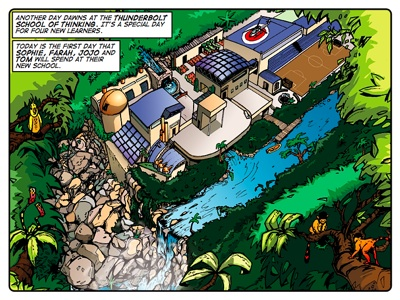
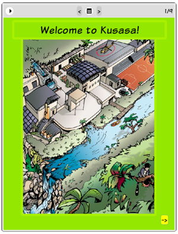
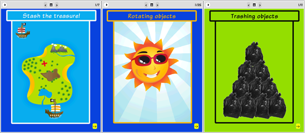

Story: The Thunderbolt Kids
Theme: Challenging your assumptions.
Synopsis
This is the first day at the Thunderbolt School of Thinking for our four protagonists, Sophie, Farrah, Jojo and Tom. The function of this story is to introduce learners to these characters and to Kusasa as a whole – and, in particular, to eToys. It does this while exploring the theme of challenging our assumptions.
Each kid starts the day with fearful thoughts about what usually gets them into trouble. Sophie usually gets into trouble for asking too many questions while Farrah gets into trouble for talking too much. Jojo is usually too active for his teachers' liking and Tom has a habit of breaking things while he tries to find out how they work. Each of the Thunderbolt Kids is terrified that they're going to ruin their first day by being punished for doing the things that define them.
During the course of the story they learn that their new school encourages them to express themselves. They eventually realise that their worries were nothing more than false assumptions. At the Thunderbolt School of Thinking – a metaphorical representation of Kusasa – they will be encouraged to sharpen their own styles of thinking and doing, rather than suppressing the qualities that make them who they are.
As an introduction to eToys, the story shows learners that eToys is a safe environment where they can explore their own interests. It is an environment where they can express themselves without the fear of failure. And by playing in this environment during the course of Kusasa they will become better thinkers.
Activity
Since this is the first Kusasa lesson, all available lesson time reserved for eToys.

The eToys project: Welcome to
Kusasa!
The first eToys project simply introduces learners to the world of eToys. Learners simply read through the book. This module allows learners to become familiar with the eToys interface. The facilitator’s role at this point is to help learners to find and open modules, and to deal with the many different kind of problems that crop up when a whole class of learners begins working with unfamiliar software.
Once learners finish reading “Welcome to Kusasa” they will go on to some tutorials that will let them practise bringing up and using the halo of handles around various objects. This can be tricky, especially for younger learners, so the more practise they can get, the better.
